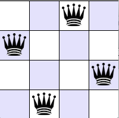

- isUnderAttack(int row, int column)The isUnderAttack(int row, int column) method determines if a Queen that is placed at [row][column] is under attack by another Queen on the board. This method will need to check for being under attack by column, diagonally left, and diagonally right. As you are placing Queens row-by-row, you only need to check for the rows above where a Queen has already been placed. Some of this method has already been defined for you, and it should be clear where you need to extend the logic.
- placeQueens(int row)
NQueens(currentRow)
if currentRow > end of the board
return true // we found a solution
for (each column in currentRow)
if a queen placed in currentRow and column would not be attacked
modify the board by add the queen to currentRow/column
recursively call NQueens(nextRow)
if the recursive call cannot find a solution
remove queen placement
else
return true // the recursive call did find a solution
return false // no solution for each column in currentRow
| Task |
Points |
| Comments |
10 |
| Correct implementation of isUnderAttack() |
40 |
| Correct implementation of placeQueens() |
40 |
| Correct implementation of clearBoard(),
setQueen(), removeQueen() |
10 |
| Total |
100 |